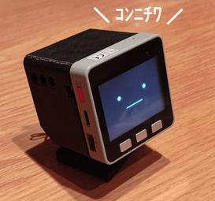

2022/9/10
M5Stack界隈で爆発的な人気を誇る、ｽﾀｯｸﾁｬﾝを作ってみました。
ｽﾀｯｸﾁｬﾝとは、オープンソースの手乗りサイズロボットです。
詳細は下記のサイトをご覧ください。
スタックチャン（Stack-chan） | ProtoPedia
コミュニケーションロボットを、あなたの手に。
オープンソースなので、設計データはgithubで公開されております。
3Dプリンタ用のデータ、回路/基板の設計資料、ソフトウェアなど、作製に必要なデータが全て揃っています。
GitHub - meganetaaan/stack-chan
A JavaScript-driven M5Stack-embedded super-kawaii robot.
このｽﾀｯｸﾁｬﾝのコンセプトに大勢の方が賛同しており、各々が独自のｽﾀｯｸﾁｬﾝを産み出し、コミュニティを盛り上げています。
twitterで #ｽﾀｯｸﾁｬﾝ を検索してみてください。
きっと作りたくなると思います。
4年位前に買って、そのまま眠っていたM5Stack Grayを使っています。
我が家のｽﾀｯｸﾁｬﾝは仕事を与えられ、毎日子供と一緒に働いています。
計算ドリルにかかった時間を測ってあげます。
子供の計算ドリルの時間を測ってあげる #ｽﾀｯｸﾁｬﾝ pic.twitter.com/VMXPs1fQS1
— やまっく (@YY87750722) June 26, 2022
天気と気温と降水確率を教えてくれます。
先人の知恵を拝借しまして、#ｽﾀｯｸﾁｬﾝ に天気予報を入れてみました。
— やまっく (@YY87750722) June 17, 2022
なんか毎朝、子供に「今日暑いかな？」って聞かれるので、これですぐ答えられるね。 https://t.co/ZpV6mBIPnm pic.twitter.com/AaU7ws9jel
かわいいです。
おはよー pic.twitter.com/gWNURFBlal
— やまっく (@YY87750722) August 28, 2022
ハードの主な作り方は2通りあるかと思います。
Arpeggio Factory - BOOTH
ｽﾀｯｸﾁｬﾝの組み立てキットや電子部品を展開しています。 ご不明な点がございましたらお気軽にお問い合わせください。
本ページでは1でも2でもなくて、以下の方法で作っています。
※ちょっと特殊で、参考にならない気もします。
本ページで使った材料一式は下記になります。
（このピンヘッダはデフォルトのスタックチャン基板には使えません）
以下のgithubにある3Dプリンタ用ファイルを、3Dプリンタで出力します。
使用するサーボモータによって、プリントするファイルが異なりますのでご注意ください。
stack-chan/case
A JavaScript-driven M5Stack-embedded super-kawaii robot. - stack-chan/case at main · meganetaaan/stack-chan
がしかし、普通の人は3Dプリンタを持っていないと思います。
私は、近所のワーキングスペースに3Dプリンタがあったので、そこでプリントしました。
3Dプリントしてくれるサービスなどもあるようです。
JLC3D - Online 3D Printing Service | Custom Electronics Enclosures | JLCPCB
JLCPCB gives you the possibility to create a ready-to-market electronic product by producing 3D printed enclosures for your PCBs.
【JLCPCB 3Dプリントサービス】ユーザ登録の方法と注文を出す手順
JLCPCBで注文を出すときの手順をまとめておきます。全て英語なのですが、DeepLやGoogle翻訳を使えば大丈夫だと思うので挑戦してみてください。
ユニバーサル基板をケースに入るサイズで切り出して、部品を回路通りにはんだ付けします。
結構大変です。
（プリント基板発注した方がよかったと今では思っています。）
回路図は こちら。

メカスイッチの部分は、ケースに穴をあけて外からON/OFFできるようにしています。
ソフトウェアはArduinoで作製しています。
ソースコードをGithubにまるっと上げていますので、宜しければ参照ください。
GitHub - yamaccu/myStackchan
スタックチャン（自分用）. Contribute to yamaccu/myStackchan development by creating an account on GitHub.
ちなみに、オリジナルのｽﾀｯｸﾁｬﾝはModdableというJavaScriptで組み込みプログラミングができるツールで作成されています。
こちらもgithubにあがっています。
AquesTalkという音声合成ライブラリを使用してしゃべっています。
AquesTalkによる音声出力、およびM5Stack-Avatarによる顔の表示は、こちらでまとめています。
「M5Stack」AquesTalkを使う
M5StackでAquesTalkを使用して音声出力する方法をまとめました。
しゃべる内容については、ソースコードを変えなくても内容変更できるよう、Googleスプレッドシートにしゃべる内容を記載して、SSSAPIというwebサービスでAPI化して取り込んでいます。
スプレッドシートを書き換えてあげると、しゃべる内容も変わります。
（起動時に読み込んでいるので、スプレッドシートを変えたらｽﾀｯｸﾁｬﾝを再起動しています）
GoogleスプレッドシートのAPI化サービス -SSSAPI-
ちょっとしたAPIならGoogle Spread Sheetでサクッと！ SSSAPIはGoogleスプレッドシートのAPI化サービスです。ノーコード/コードレスでスプシをAPI化。ドメイン制限や履歴も保存できます。まずは無料でおためしください。
以下の処理を実施しています。
wifi接続、天気予報API取得については、こちらでまとめています。
「M5Stack」wifi接続して天気予報JSONを取得する
M5Stackでwifiに接続し、JSONを取得する方法をまとめました。 web APIなどはJSON形式であることが多いので、JSONを取り扱うことで様々な情報を取り込むことができます。 本ページでは例として、天気予報JSONを取得して画面に表示します。
画像の表示については、こちらにまとめています。
「M5Stack」LCD画面に画像を表示する
M5StackでLCDに画像を表示する方法をまとめました。
ボタンを押してから最初の30秒と、あとは1分おきに経過時間をしゃべってお知らせしてくれます。
millis()関数を使って経過時間を測っています。
char talk[50]; // AquesTalk用
unsigned long startTime = millis();
while(true)
{
unsigned long collapseTime = millis() - startTime;
if (collapseTime / 1000 == 30) // 30秒
{
playAquesTalk("<NUMK VAL=30 COUNTER=byo->/ke-ka.");
}
else if ((collapseTime / 1000) % 60 == 0 && collapseTime / 1000 != 0) // 1分おき
{
int minutes = collapseTime / 60000;
sprintf(talk, "<NUMK VAL=%d COUNTER=funn>/ke-ka.", minutes);
playAquesTalk(talk);
}
M5.update();
if (M5.BtnA.wasClicked() || M5.BtnB.wasClicked() || M5.BtnC.wasClicked())
{
int finishTimeMinute = collapseTime / 60000;
int finishTimeSecond = (collapseTime / 1000) % 60;
playAquesTalk("kaka'tta/jikannwa");
waitAquesTalk();
if (finishTimeMinute > 0)
{
sprintf(talk, "<NUMK VAL=%d COUNTER=funn>", finishTimeMinute);
playAquesTalk(talk);
waitAquesTalk();
}
sprintf(talk, "<NUMK VAL=%d COUNTER=byo->", finishTimeSecond);
playAquesTalk(talk);
waitAquesTalk();
playAquesTalk("dayo");
waitAquesTalk();
delay(200);
playAquesTalk("o_tsukaresamade'shi'ta-");
waitAquesTalk();
startTime = millis();
break;
}
}
ｽﾀｯｸﾁｬﾝを作って、少し実用的な機能を実装してみました。
子供には好評で、特にタイマーは良く使ってくれています。
オープンソースなハードウェアというのはあまり見かけないのですが、作ってみてとても楽しかったです。
勉強にもなりますし、こういうプロダクトがもっと増えるといいですね。
Tech Blog Index
2023/02/27
・ TVON時間カウンタ作成
2022/09/09
・ ｽﾀｯｸﾁｬﾝを作ってみた
2022/04/30
・ 日輪刀をプログラミング
2022/02/16
・ Statiqでブログ作成
Sponsor